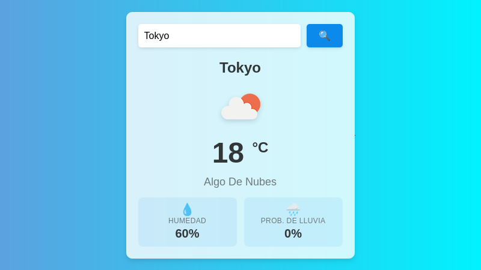

Bienvenido a mi portafolio
Buenas soy un desarrollador web junior apasionado por crear experiencias digitales atractivas y funcionales. Explora mis proyectos y no dudes en contactarme para colaborar en futuros desafíos.
Sobre mí
Titulado en DAW, reforzando HTML, CSS y JavaScript. Trabajo con Linux y Git.
Proyectos Destacados
Contacto
Puedes contactarme a través de mi correo electrónico: santiagoburgoszhunio@gmail.com